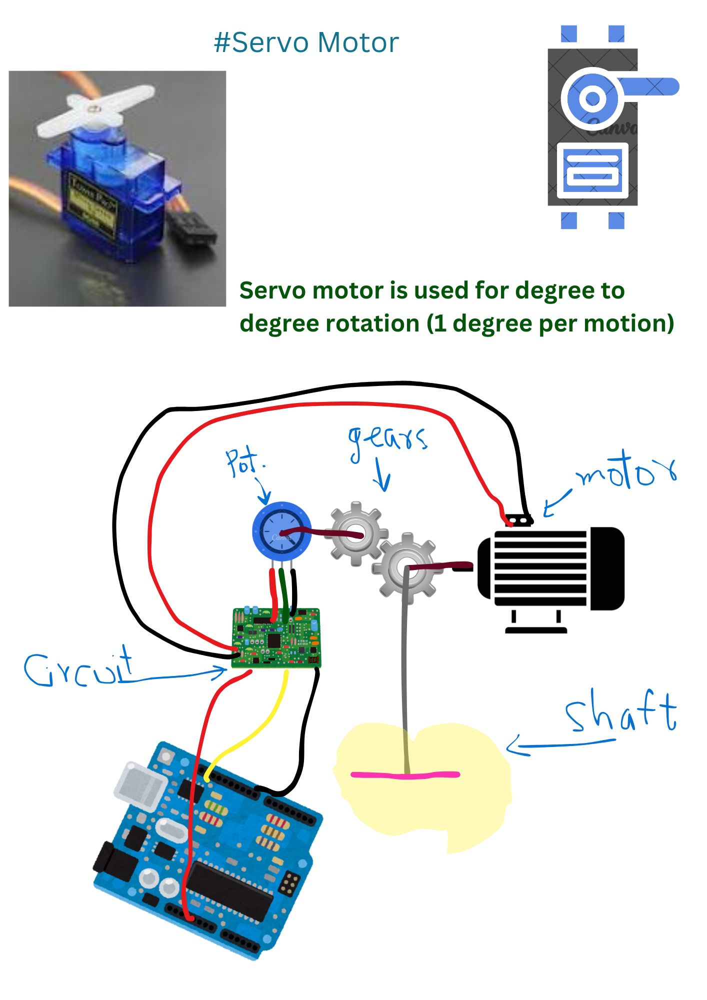
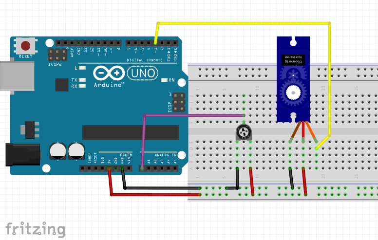

Controlling a Servo Motor with a Potentiometer using Arduino
Introduction
A servo motor is a special type of motor designed for precise control of angular position. It is widely used in robotics, automation, and control applications. In this tutorial, we will learn how to control a servo motor using a potentiometer with an Arduino. This project will allow the user to adjust the position of the servo motor by rotating the potentiometer.
Components Required
- Arduino UNO – Acts as the microcontroller
- Servo Motor (SG90) – For rotation control
- Potentiometer (10kΩ) – To provide variable resistance for position control
- Breadboard – For easy connections
- Jumper Wires – For wiring the components
- USB Cable – To upload code to Arduino
Theory Behind Servo Motor

A servo motor operates using Pulse Width Modulation (PWM) signals. It has three wires:
- VCC (Red) – Connected to 5V power supply
- GND (Black or Brown) – Connected to ground
- Signal (Yellow or Orange) – Receives PWM signals from the microcontroller
The position of the motor shaft is controlled by the width of the PWM signal sent to the signal pin. The standard duty cycle values for an SG90 servo are:
- 0 degrees → 500µs (0.5ms)
- 90 degrees → 1500µs (1.5ms)
- 180 degrees → 2500µs (2.5ms)
Circuit Diagram and Wiring

Connections
- Servo Motor
- Red Wire (VCC) → Arduino 5V
- Black Wire (GND) → Arduino GND
- Yellow/Orange Wire (Signal) → Arduino Pin 3
- Potentiometer
- Left Pin → Arduino 5V
- Right Pin → Arduino GND
- Middle Pin → Arduino A0 (Analog Input)
Arduino Code
#include <Servo.h> // Include Servo Library
Servo myServo; // Create a Servo Object
int potPin = A0; // Potentiometer connected to Analog Pin A0
int val; // Variable to store the potentiometer value
void setup() {
myServo.attach(3); // Attach Servo to pin 3
}
void loop() {
val = analogRead(potPin); // Read Potentiometer value (0-1023)
val = map(val, 0, 1023, 0, 180); // Convert to angle (0-180 degrees)
myServo.write(val); // Set Servo position
delay(15); // Small delay for stability
}
Explanation of Code
- Library Inclusion: The Servo.h library is included to use pre-defined functions.
- Servo Object Creation: Servo myServo; creates a servo motor object.
- Analog Read from Potentiometer: The value from the potentiometer (0-1023) is read and stored in val.
- Mapping Values: Since the servo angle varies from 0 to 180 degrees, we map the 0-1023 potentiometer reading to 0-180 using map(val, 0, 1023, 0, 180);.
- Writing to Servo: The mapped value is passed to myServo.write(val);, which moves the servo accordingly.
- Delay for Stability: delay(15); ensures smooth movement.
Working Principle
- Rotating the potentiometer changes the resistance, modifying the voltage input to the Arduino.
- The Arduino reads this analog input and converts it into a servo angle (0-180 degrees).
- The servo motor then moves to the corresponding angle based on the potentiometer’s position.
Conclusion
This tutorial provides a fundamental understanding of controlling a servo motor using a potentiometer and an Arduino. The concept can be extended to more complex applications such as robotic arms, automated door systems, and camera gimbals.
Further Enhancements
- Use an OLED display to show the angle in real-time.
- Implement multiple servos for complex applications.
- Introduce buttons for preset positions (e.g., 0°, 90°, 180°).
This project is an excellent starting point for beginners in embedded systems and robotics. Happy learning!